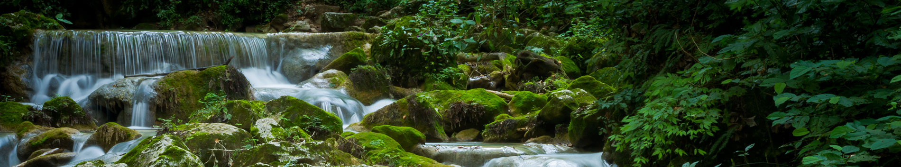
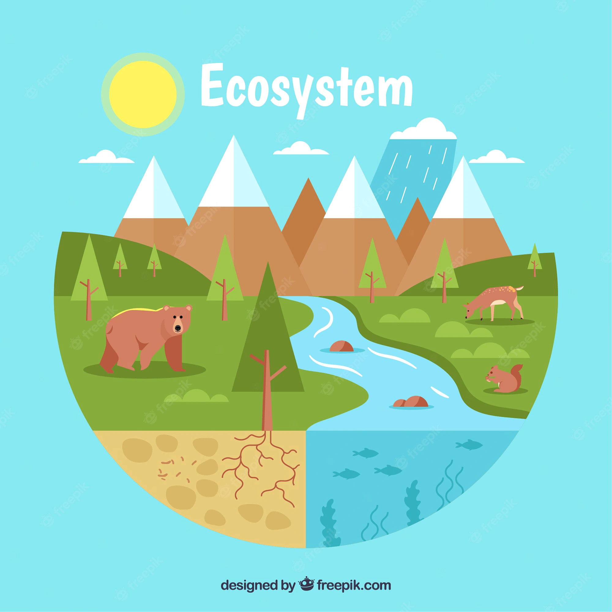
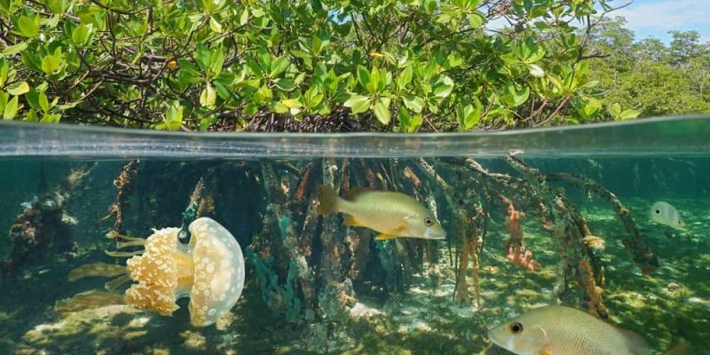

En biología, un ecosistema es un sistema que está formado por un conjunto de organismos, el medio ambiente físico en el que viven (hábitat) y las relaciones tanto bióticas como abióticas que se establecen entre ellos. Las especies de seres vivos que habitan un determinado ecosistema interactúan entre sí y con el medio, determinando el flujo de energía y de materia que ocurre en ese ambiente.
Existe una gran diversidad de ecosistemas en el planeta. Todos están formados por factores bióticos (seres vivos) y factores abióticos (elementos no vivos, como el suelo o el aire). Existen además, distintos tipos de ecosistemas: hay marinos, terrestres, microbianos y artificiales, entre otros ejemplos.
Un ejemplo de las relaciones que tienen lugar entre los seres vivos de un ecosistema son las relaciones alimentarias. Las cadenas tróficas o alimenticias son representaciones sencillas de las relaciones alimentarias que existen entre las especies que forman parte de un ecosistema determinado. Por lo general, en los ecosistemas las cadenas tróficas se interrelacionan formando redes tróficas.
Se dice que hay una relación trófica entre dos organismos cuando uno de ellos es consumido por el otro. A su vez, el organismo consumidor puede ser el alimento de otro que forma parte del mismo ecosistema. Así, se forma una conexión entre varios eslabones y se constituye una cadena trófica. Cada uno de los eslabones de una cadena representa un organismo que “come a otro” o “es comido por otro”.
Dentro de las cadenas alimentarias existen distintos niveles tróficos, que se basan en la posición que ocupa un organismo en el flujo de materia y energía. Dicho de otra forma, el nivel trófico agrupa a todas las especies que comparten el origen de su alimento dentro del ecosistema.

Componentes de un ecosistema
Un ecosistema está integrado por dos tipos de elementos o factores:
Elementos bióticos. Son aquellos elementos de un ecosistema que poseen vida, es decir, todos los seres vivos que lo habitan Por ejemplo: la flora y la fauna.
Elementos abióticos. Son aquellos factores sin vida que forman parte de un ecosistema. Por ejemplo: condiciones climáticas, relieve, variación del pH, presencia de luz solar.
Es muy importante tener en cuenta que las relaciones que se establecen entre los elementos bióticos y abióticos también son consideradas un elemento más que forma un ecosistema determinado.

Tipos de ecosistema

Ecosistemas acuáticos:
Se caracterizan por la presencia de agua como componente principal y son el tipo de ecosistema más abundante: constituyen casi el 75 % de todos los ecosistemas conocidos. En este grupo se incluyen los ecosistemas de los océanos y los de las aguas continentales dulces o saladas, como ríos, lagos y lagunas.
Ecosistemas terrestres:
Tienen lugar sobre la corteza terrestre y fuera del agua en diversos tipos de relieve: montañas, planicies, valles, desiertos. Existen entre ellos diferencias importantes de temperatura, concentración de oxígeno y clima, por lo que la biodiversidad de estos ecosistemas es grande y variada. Algunos ejemplos de este tipo de ecosistemas son los bosques, los matorrales, la estepa y los desiertos.
Ecosistemas mixtos:
Son ecosistemas que se ubican en zonas de “intersección” de distintos tipos de terrenos, por ejemplo, en los que se combinan el medio acuático y el terrestre. Los ecosistemas mixtos también llamados híbridos, comparten características tanto de ecosistemas terrestres como de los acuáticos, y se los considera zonas de transición entre ambos tipos de ecosistemas mencionados. Los seres vivos que habitan en este tipo de ecosistemas (como los anfibios) pasan la mayor parte del tiempo en uno de los dos ecosistemas pero requieren del otro para reposar, alimentarse o procrear. Algunos ejemplos de este tipo de ecosistemas son los manglares, los esteros y las costas.
Ecosistemas microbianos:
Son ecosistemas formados por organismos microscópicos que habitan en prácticamente todos los ambientes, tanto acuáticos como terrestres, e incluso dentro de organismos mayores, como es el caso de la flora microbiana intestinal.
Ecosistemas artificiales:
Son aquellos ecosistemas creados y/o intervenidos por el ser humano, por lo cual también se los conoce como ecosistemas antrópicos. Algunos ejemplos de estos ecosistemas, que son cada vez más comunes en nuestro planeta, son los ecosistemas urbanos, los embalses y los ecosistemas agrícolas.